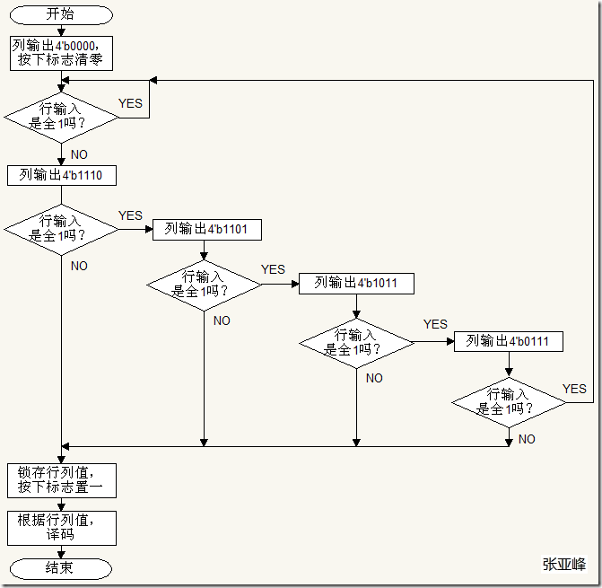

如何设计一个基于 FPGA 的计算器¶
1. 问题描述¶
Now we wanna design a calculator based on FPGA. The requirements are as follows:
- We can perform: add, subtraction, and, or, compare. And the two option numbers are 16 bits number. The operation module is only an 8-bit ALU, so we need to split the 16-bit operands into two 8-bit operands and then concatenate the results.
- The calculator should be able to perform continuous operations, which means inputting two operands and an operator, then outputting the result, and then inputting two operands and an operator again, and outputting the result again, and so on.
- The calculator should support priority operations. For example, when there are multiple operators in an expression, such as addition, subtraction, AND, OR, and comparison, the comparison should be calculated first, then the AND and OR, and finally the addition and subtraction.
- The calculator should be able to read input from a matrix keyboard and display the input and the result on a digital display.
2. 思路¶
First, we need to design the top-level module. Obviously, to read and display data, we need a matrix keyboard driver module, a BCD conversion module, and a digital display driver module. For the operation module, we also need to implement an 8-bit ALU, a module that splits 16-bit operands into two 8-bit operands, and a storage module that concatenates the results into a 16-bit integer. In addition, to implement priority operations, we need to use a state machine to control the order of operations. This operation is equivalent to building a stack.
输入输出¶
The matrix keyboard driver module can be easily implemented by a three-stage state machine, as shown below: 
The digital display driver and BCD module are also easy to implement, and will not be elaborated here.
运算模块¶
The implementation of the ALU is relatively easy and does not require building gate-level circuits. Instead, all functions can be implemented with expressions, as shown below.
module alu (
dataA,
dataB,
cs,
carry_in,
result,
zero,
carry_flag
);
input [7:0] dataA;//数字1
input [7:0] dataB;//数字2
input [2:0] cs;//运算符
input carry_in;//进位标志
output reg [7:0] result;//结果
output reg zero;//零标志
output reg carry_flag;//进位标志
reg [8:0] carry_temp; //最高位为进位
// 001:add;
// 010:sub;
// 011:and;
// 100:or;
// 101:compare;
always @(*) begin
case (cs)
//add 10'd1011
3'b011 : begin
result = dataA + dataB + carry_in;
carry_temp = {1'b0,dataA} + {1'b0,dataB} + carry_in;
carry_flag = carry_temp[8];
zero = 0;
if(result == 0)
zero = 1;
end
//sub 10'd1012
3'b100 : begin
result = dataA - dataB-carry_in;
carry_temp = {1'b0,dataA} - {1'b0,dataB} - carry_in;
carry_flag = carry_temp[8];
if(result==0)
zero = 1;
else zero=0;
end
//and 10'd1009
3'b001 :begin result = dataA & dataB; carry_flag=1'b0; zero=0; end
//or 10'd1010
3'b010 :begin result = dataA | dataB; carry_flag=1'b0; zero=0; end
//compare 10'd1013
3'b101 : begin
result = (dataA>dataB)?8'd1:8'd0;
carry_flag=1'b0;
zero =0;
end
endcase
end
endmodule
分拆模块¶
The module responsible for splitting and sending is the core of the entire calculator. Let's review the design requirements first:
- The 16-bit operand needs to be split into 8 bits and calculated twice.
- Continuous operation is required.
The former requires several registers to store the input operands and the returned results, and the latter requires the ability to receive the returned results. So the input and output ports of this module can be roughly determined as follows:
module control(
input [15:0] data_in,//输入的操作数
input [15:0] result,//返回的结果
input [2:0] cs,//运算符
input clk,//时钟
output reg [7:0] data_out1,//输出的操作数1
output reg [7:0] data_out2,//输出的操作数2
);
reg [15:0] data1;//用以存储输入的操作数
reg [15:0] data2;//用以存储输入的操作数
reg [15:0] regsign; //缓存计算符号
reg [4:0] state; //状态机
reg [32:0] cnt1; //计数器
...
Tip
当状态繁多的时候利用状态机实现是不错的选择
在这里，我们能够确定的状态有
localparam IDLE =4'b0_000;// 初始状态
localparam STORE_NUM1 =4'b0_001;// 储存第一个数字
localparam STORE_NUM2 =4'b0_010;// 储存第二个数字
localparam STORE_SIGN =4'b0_011;// 储存符号位
localparam UP_LOW =4'b0_101;//传下八位数
localparam UP_HIGH =4'b0_110;//传上八位数
localparam ENDL =4'b0_111;//运算结束，送出运算结束标志，接收模块不再更新数据
localparam STORE_RESULT =4'b1_000;//把前一次的运算结果存在data1中
通过分析状态之间的转移条件即可构建状态机
优先级运算¶
实现优先级运算事实上是比较困难的，在 C 语言或者 Java 中，我们一般通过堆栈来操作，但在verilog中没有现成的堆栈供你使用，因此，只能自己构建，或者模拟对堆栈的操作来完成这一要求。
这里提供一个可行的思路:
显然，为了确定整个表达式中运算符的先后顺序，我们需要一个、或者两个数组来分别存储数字和运算符。同时，我们需要遍历整个数组来筛选每次参与运算的运算符。
在 Verilog 中，我们不希望使用 for 循环或者 while 循环^[因为那会占用较多的资源，同时代码综合的速度变慢]， 因此，采用 always 模块和状态机来实现这一要求是不错的选择。
为了更好的利用后续的模块，我们可以模拟输入方式，即将矩阵键盘的输入调整顺序后输出，这样，我们就可以利用之前的模块来实现这一功能。 $$ Input: 123 + 50 - 33 \& 34 $$ 转化为 $$ Output: 123 + 50 - 32 $$ 整个状态机的设计如下:
localparam IDLE = 8'd0;// 初始状态
localparam LOAD_NUM1 = 8'd1;// 储存第一个数字
localparam LOAD_NUM2 = 8'd2;// 储存第二个数字
localparam LOAD_SIGN = 8'd3;// 储存符号位
localparam COMPARE_NUM1 = 8'd4;// 判断有无比较符号
localparam COMPARE_NUM2 = 8'd5;// 判断有无与或
localparam COMPARE_NUM3 = 8'd6;// 进行最后的表达式输出
localparam COMPARE_OPT1 = 8'd7;// 进行比较运算
localparam COMPARE_OPT2 = 8'd8;// 进行与或运算
localparam COMPARE_OPT3 = 8'd9;// 进行加减运算
localparam RESULT = 8'd10;// 输出结果
由于没有栈这种数据结构，我们的代码会稍显冗长，但是思路是类似的，逐步遍历筛选，最后将结果输出.